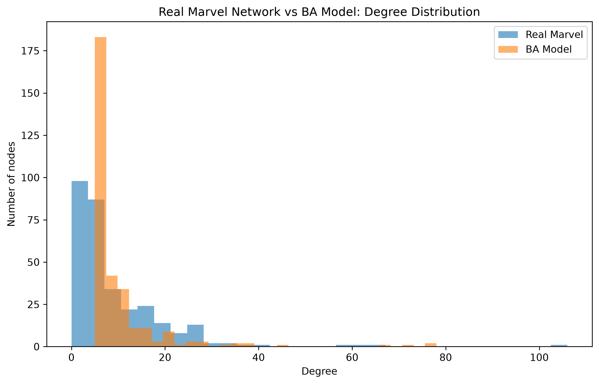
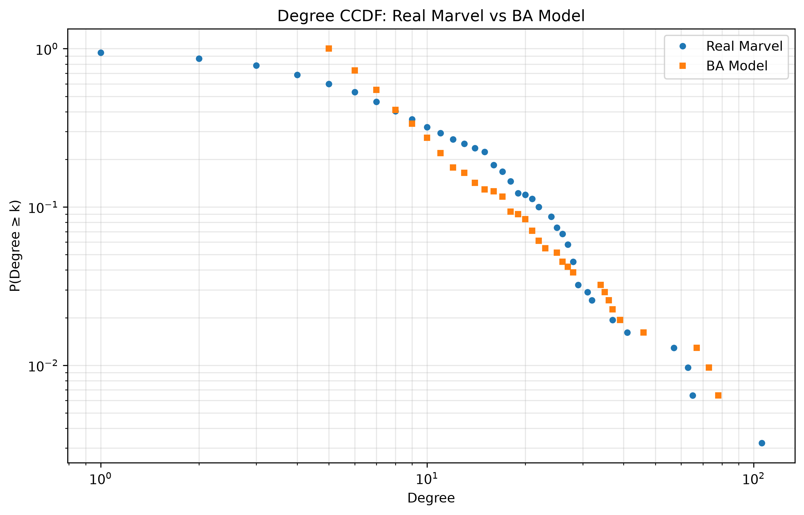

Social Graphs and Interactions
In Week 1, we constructed and explored a social network of Marvel characters based on relationships extracted from Wikipedia.
In Week 2, we investigate whether a simple network growth mechanism called preferential attachment can explain some of the structure observed in the real Marvel network.
Can preferential attachment explain the structure of the Marvel character network?
The original Marvel network is directed because the edges represent links between characters. For comparison with the Barabási–Albert model, we converted the network into an undirected network.
The resulting real Marvel network contains:
We then generated a Barabási–Albert (BA) preferential attachment network with the same number of nodes. We selected m = 5, which produced a network with a similar number of edges.
The two networks were compared using:
| Measure | Real Marvel | BA Model |
|---|---|---|
| Nodes | 310 | 310 |
| Edges | 1,439 | 1,525 |
| Average degree | 9.284 | 9.839 |
| Density | 0.0300 | 0.0318 |
| Connected components | 21 | 1 |
| Average clustering | 0.301 | 0.105 |
The first comparison examines the degree distribution of the real Marvel network and the BA model.

Figure 1. Degree distribution of the real Marvel network compared with the Barabási–Albert model.
Both networks contain highly connected nodes, showing that preferential attachment can reproduce the general tendency for some nodes to become much more connected than others.
The complementary cumulative distribution function (CCDF) provides another way of comparing the degree distributions, particularly in the high-degree region.

Figure 2. Degree CCDF for the real Marvel network and the Barabási–Albert model.
The comparison shows that the real Marvel network contains a particularly strong high-degree hub structure. The preferential attachment model captures the presence of hubs, but does not reproduce the exact distribution of degrees observed in the Marvel network.
One of the clearest differences between the two networks appears in their global and local structure.
The real Marvel network contains 21 connected components, whereas the BA model contains only 1 connected component.
This means that preferential attachment produces a single connected network, while the Marvel network contains several separate groups of characters.
The average clustering coefficient of the Marvel network is approximately 0.301, compared with only 0.105 for the BA model.
Therefore, characters in the real Marvel network are much more likely to form tightly connected local groups than would be expected from a simple preferential attachment mechanism.
We also compared the nodes with the highest degree in both networks.
| Rank | Character | Degree |
|---|---|---|
| 1 | Spider-Man | 106 |
| 2 | Hulk | 65 |
| 3 | Wolverine (character) | 63 |
| 4 | Doctor Strange | 57 |
| 5 | Deadpool | 41 |
| 6 | She-Hulk | 37 |
| 7 | Phoenix (Guardians of the Galaxy) | 32 |
| 8 | Scarlet Witch | 32 |
| 9 | Black Panther (character) | 31 |
| 10 | Venom (character) | 29 |
| Rank | BA Node | Degree |
|---|---|---|
| 1 | Node 7 | 78 |
| 2 | Node 9 | 78 |
| 3 | Node 8 | 73 |
| 4 | Node 0 | 67 |
| 5 | Node 10 | 46 |
| 6 | Node 19 | 39 |
| 7 | Node 6 | 37 |
| 8 | Node 15 | 36 |
| 9 | Node 26 | 35 |
| 10 | Node 16 | 34 |
Unlike the real network, the BA model nodes do not represent specific Marvel characters. They are simply numbered nodes. Therefore, the hub identities themselves are not meaningful; the important comparison is their degree.
The BA model successfully reproduces several broad features of the Marvel network.
Despite reproducing the presence of hubs, the BA model misses important structural properties of the Marvel network.
Preferential attachment explains part, but not all, of the Marvel network structure.
The Barabási–Albert model successfully produces highly connected hubs and has a similar average degree and density to the real Marvel network. This suggests that preferential attachment can help explain why some Marvel characters become much more connected than others.
However, the model fails to reproduce important structural properties of the real network. The Marvel network contains 21 connected components and has substantially higher clustering than the BA network. These differences suggest that mechanisms other than preferential attachment are important for explaining the Marvel character network.
In particular, community structure and local connections between related characters appear to play an important role. Therefore, preferential attachment is useful for explaining the formation of hubs, but it is not sufficient to reproduce the complete structure of the Marvel network.